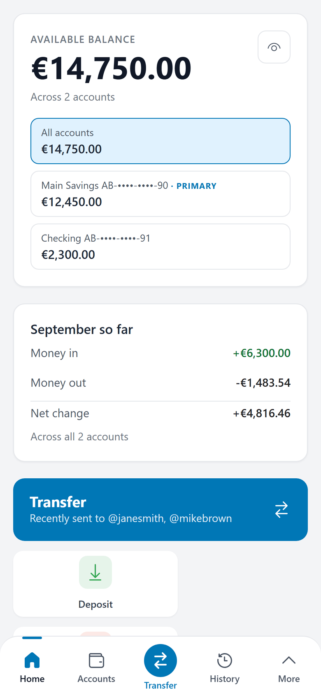
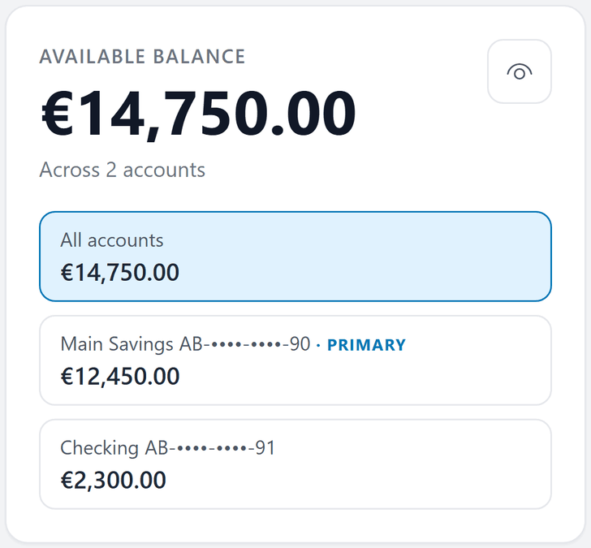
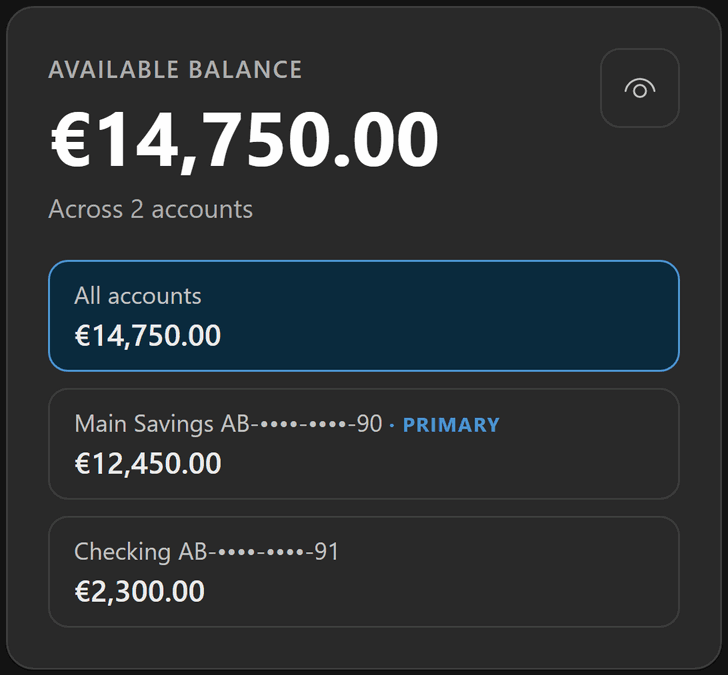
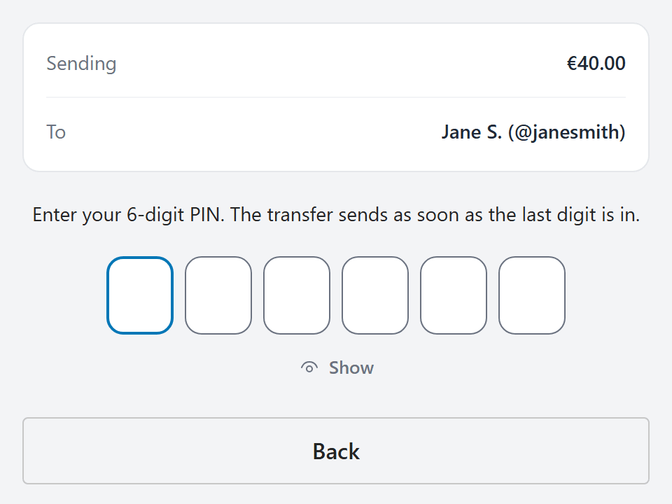
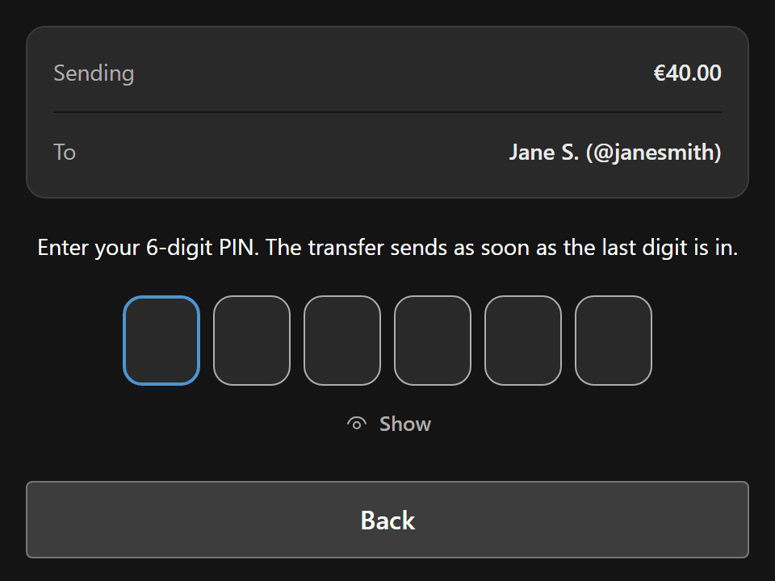
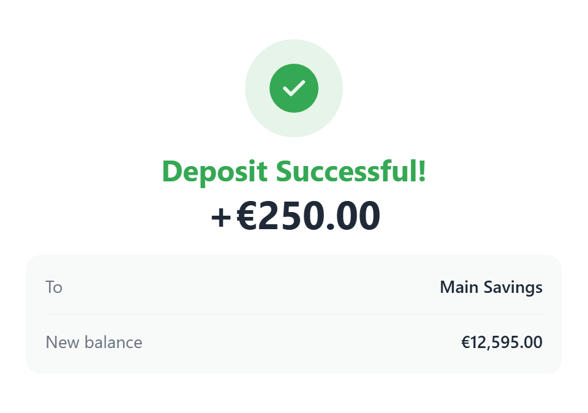
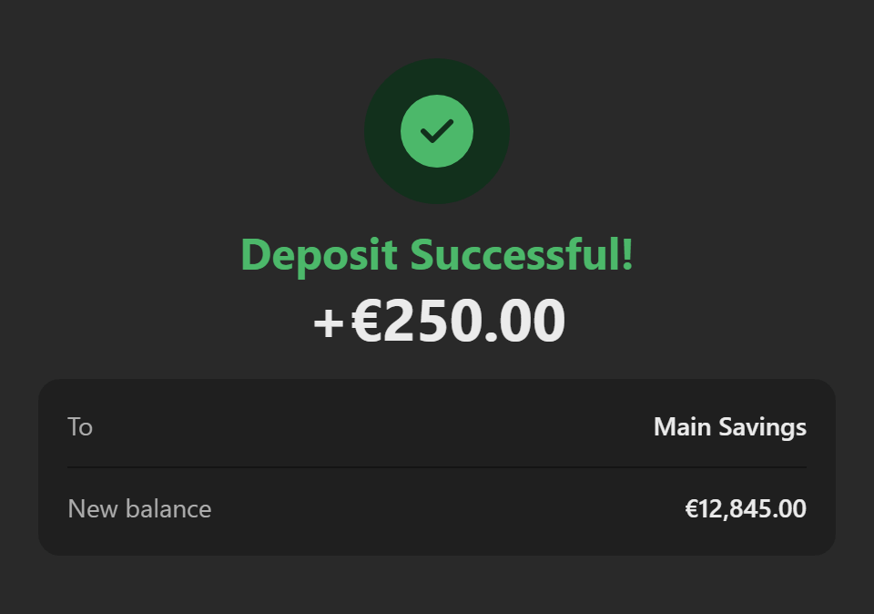

Portfolio project by Vladislav Aleshaev Full-stack engineer (.NET, React, Azure)
Progetto di portfolio di Vladislav Aleshaev Sviluppatore full-stack (.NET, React, Azure)
A working bank. Open it and try to break it. Una banca che funziona. Aprila e prova a romperla.
A banking demo with invented money: a .NET 10 API, a React app and SQL Server, live on Azure. A payment is applied once, the access token stays on the server, and security events are written to a hash‑chained log.
Una demo bancaria con denaro inventato: un'API .NET 10, un'app React e SQL Server, online su Azure. Un pagamento viene eseguito una sola volta, il token di accesso resta sul server e gli eventi di sicurezza finiscono in un registro concatenato con hash.
The demo is asleep. La demo dorme. Checking the demo… Controllo la demo… Starting it takes about 25 seconds. Si sveglia in circa 25 secondi. Invented money, no sign-up. Denaro inventato, senza registrarsi.
- 248pull requests merged 248merge di pull request
- 4,347automated tests 2,846 backend, 1,412 frontend, 89 in a real browser on the real stack 4.347test automatici 2.846 di backend, 1.412 di frontend, 89 in un browser vero sullo stack reale
- 64design decisions written down 64decisioni di progetto scritte
- 9required checks and a security scan before any merge 9controlli obbligatori e una scansione di sicurezza prima di ogni merge
Counted on Contati il




What it proves Che cosa dimostra
-
A payment is applied once. Un pagamento viene eseguito una sola volta.
Every money operation carries a key the server recognises: retries, network errors and duplicate requests do not create a second charge. It held under 24 identical parallel requests on a real SQL Server.
Ogni operazione che muove denaro porta con sé una chiave che il server riconosce: nuovi tentativi, errori di rete e richieste doppie non creano un secondo addebito. Ha retto a 24 richieste identiche in parallelo su un vero SQL Server.
Decision 0009 Decisione 0009 Test: 24 in parallel Test: 24 in parallelo
-
The access token never reaches the browser. Il token di accesso non arriva mai al browser.
A BFF keeps it in a session on the server; the browser gets a cookie that the page's scripts cannot read.
Un BFF lo tiene in una sessione sul server; il browser riceve un cookie che gli script della pagina non possono leggere.
-
One PIN entry authorises one payment. Un inserimento del PIN autorizza un solo pagamento.
Bound to that account, that amount and that payee, valid two minutes, usable once. Three wrong PINs lock the PIN for 15 minutes.
Legato a quel conto, a quell'importo e a quel beneficiario, valido due minuti, utilizzabile una sola volta. Tre PIN sbagliati bloccano il PIN per 15 minuti.
Decision 0042 Decisione 0042 Test: spent once Test: usata una volta
-
A security log that can be checked. Un registro di sicurezza che si può verificare.
Append-only, each row chained to the one before by a keyed hash. A tool in the repository, AzureBank.AuditVerifier, walks the chain; it is run by hand against the database, so a visitor cannot run it. It does not detect rows cut from the end of the table.
Le righe si possono solo aggiungere, ognuna legata alla precedente da un hash con chiave. Uno strumento del repository, AzureBank.AuditVerifier, percorre la catena: si lancia a mano sul database, quindi un visitatore non può usarlo. Non rileva le righe tagliate dalla fine della tabella.
Decision 0044 Decisione 0044 Test: the chain Test: la catena
Try it in three minutes Provala in tre minuti
-


Open the demo and press “Try the demo”: you get a private copy that no other visitor sees, two accounts (Main Savings €12,450.00 and Checking €2,300.00) and two months of history.
Apri la demo e premi «Try the demo»: ricevi una copia privata che nessun altro visitatore vede, due conti (Main Savings €12,450.00 e Checking €2,300.00) e due mesi di movimenti.
-


Send money to a contact: type the handle, press “Verify”, enter an amount and confirm with the PIN
123456, which the page shows. Then make a deposit and a withdrawal, and open the history.Invia denaro a un contatto: scrivi il suo handle, premi «Verify», inserisci un importo e conferma con il PIN
123456, indicato nella pagina. Poi fai un deposito e un prelievo, e apri lo storico. -


Then try to break it.
- Double-click the button that sends a deposit: one deposit, not two.
- Send more than the account holds: the form stops you, and nothing is sent.
- Type a wrong PIN three times: the PIN locks for 15 minutes. Leave this one for last.
Poi prova a romperla.
- Fai doppio clic sul pulsante che invia un deposito: un solo deposito, non due.
- Invia più di quanto c'è sul conto: il modulo ti ferma, e non parte nulla.
- Sbaglia il PIN tre volte: il PIN si blocca per 15 minuti. Lascia questa prova per ultima.
Invented money, no sign-up, each copy lasts 24 hours, don't enter real personal data. More things to try
Denaro inventato, nessuna registrazione, ogni copia dura 24 ore: non inserire dati personali veri. L'interfaccia della demo è in inglese. Altre prove da fare (in inglese)
How it is built Com'è costruita
The path of a request Il percorso di una richiesta
What each stop guarantees, with the document that states it.
Che cosa garantisce ogni tappa, con il documento che lo afferma.
-
Browser side Lato browser
Browser
Runs the React 19 app (TypeScript, Fluent UI).
Esegue l'app React 19 (TypeScript, Fluent UI).
To the next stop goes: Alla tappa successiva passa: cookie
-
Server side Lato server
BFF
Holds the session and the access token the API issues at sign-in; adds the token to each request.
Tiene la sessione e il token di accesso che l'API emette all'accesso; aggiunge il token a ogni richiesta.
To the next stop goes: Alla tappa successiva passa: + token
-
API
The money rules, the PIN and the audit trail.
Le regole sul denaro, il PIN e il registro di controllo.
- Applied once Eseguito una sola volta Decision 0009 Decisione 0009
- One PIN, one payment Un PIN, un pagamento Decision 0042 Decisione 0042
- Recorded and chained Registrato in catena Decision 0044 Decisione 0044
To the next stop, through: Alla tappa successiva, attraverso: EF Core
-
SQL Server
Azure SQL Database: the accounts, the movements and the audit rows.
Azure SQL Database: i conti, i movimenti e le righe del registro.
Also in the stack: .NET 10, ASP.NET Core, GitHub Actions, CodeQL, Azure Container Apps, Bicep.
Nello stack anche: .NET 10, ASP.NET Core, GitHub Actions, CodeQL, Azure Container Apps, Bicep.
How I work with AI coding agents Come lavoro con gli agenti AI
I am the project's architect and sole engineer. I designed the system and decide what gets built. I have written part of the code myself, and I direct the AI coding agents that write the rest under rules I set. I read the code I merge. Every merge is my decision and my responsibility.
Sono l'architetto del progetto e il suo unico ingegnere. Ho progettato il sistema e decido che cosa si costruisce. Una parte del codice l'ho scritta io, e dirigo gli agenti AI che scrivono il resto, secondo regole fissate da me. Leggo il codice di cui faccio il merge. Ogni merge è una mia decisione e una mia responsabilità.
0merges made by an agent, out of more than 240
0merge fatti da un agente, su più di 240
Limits, and further reading Limiti, e dove approfondire
Limits Limiti
- The first load after a quiet spell takes about 25 seconds; once awake, the app answers in under a second. It is a demo: invented data, one small instance, no availability guarantee.
- The security log detects a change made by someone who holds the database but not its key. It does not detect rows cut from the end of the table, and no schedule runs the verifier.
- A payment's key is kept for 24 hours: the same request sent again later than that is a new payment.
- The PIN is a second secret, not a one-time code: that needs a second channel, which this project does not have.
- On the demo the browser keeps the sign-in details of the visitor's own throwaway copy, so that the visitor can come back to it. A script injected in the page could read them; they open invented money only.
- One person merges, and no second person reviews a pull request: the 9 required checks, the code scan and an AI review are automated.
- Il primo caricamento dopo una pausa richiede circa 25 secondi; una volta sveglia, l'app risponde in meno di un secondo. È una demo: dati inventati, una sola piccola istanza, nessuna garanzia di disponibilità.
- Il registro di sicurezza rileva una modifica fatta da chi ha il database ma non la sua chiave. Non rileva le righe tagliate dalla fine della tabella, e la verifica non gira a scadenze fisse.
- La chiave di un pagamento è conservata per 24 ore: la stessa richiesta inviata più tardi è un nuovo pagamento.
- Il PIN è un secondo segreto, non un codice usa e getta: servirebbe un secondo canale, che questo progetto non ha.
- Nella demo il browser conserva i dati di accesso della copia usa e getta del visitatore, perché possa tornarci. Uno script iniettato nella pagina potrebbe leggerli; aprono solo denaro inventato.
- Il merge lo fa una sola persona, e nessun'altra rivede una pull request: i 9 controlli obbligatori, la scansione del codice e una revisione AI sono automatici.
Read further Per approfondire (in inglese)
Vladislav Aleshaev
Full-stack engineer (.NET, React, Azure). AzureBank is my portfolio project.
Sviluppatore full-stack (.NET, React, Azure). AzureBank è il mio progetto di portfolio.